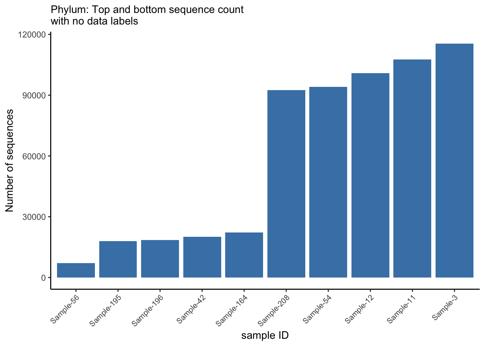
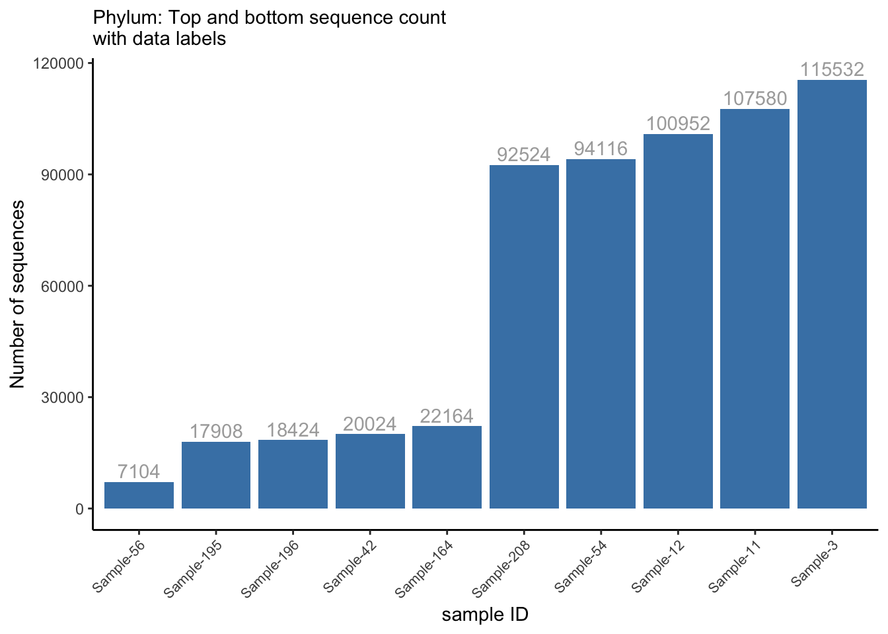

10 Microbiome Data Visualization
10.1 Compute sequence count per sample
library(tidyverse)
# ibrary(gifski)
library(magrittr) # For piping (%>%)
seqcount_per_sample <- ps_df %>%
group_by(sample_id) %>%
summarise(nseqs = sum(count), .groups = "drop") %>%
arrange(-nseqs)
head_tail <- rbind(head(seqcount_per_sample, 5), tail(seqcount_per_sample, 5))
max_y <- max(head_tail$nseqs)
head_tail %>%
mutate(sample_id = factor(sample_id),
sample_id = fct_reorder(sample_id, nseqs, .desc = F),
sample_id = fct_shift(sample_id, n = 0)) %>%
ggplot(aes(x = reorder(sample_id, nseqs), y = nseqs)) +
geom_col(stat = "identity", position = position_stack(), fill = "steelblue") +
labs(x = "sample ID", y = "Number of sequences", subtitle = "Phylum: Top and bottom sequence count \nwith no data labels") +
theme_classic() +
theme(axis.text.x = element_text(angle = 45, hjust = 1, size = 8))
head_tail %>%
mutate(sample_id = factor(sample_id),
sample_id = fct_reorder(sample_id, nseqs, .desc = F),
sample_id = fct_shift(sample_id, n = 0)) %>%
ggplot(aes(x = reorder(sample_id, nseqs), y = nseqs)) +
geom_col(stat = "identity", position = position_stack(), fill = "steelblue") +
labs(x = "sample ID", y = "Number of sequences", subtitle = "Phylum: Top and bottom sequence count \nwith data labels") +
theme_classic() +
theme(axis.text.x = element_text(angle = 45, hjust = 1, size = 8)) +
coord_cartesian(ylim = c(0, max_y)) +
geom_text(aes(label = nseqs), vjust = -0.3, color = "#AAAAAA")